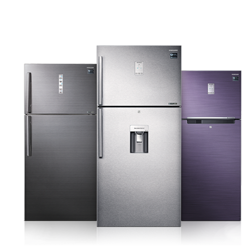

Aw Bismillah
chez Kansaye Froid Service

Fini les pannes de climatisation ! Nos experts diagnostiquent et réparent vos climatiseurs avec rapidité et précision. Profitez d'un air frais toute l'année grâce à notre service réactif et fiable.
Gardez vos aliments frais et en sécurité. Nos techniciens qualifiés interviennent sur tous types de réfrigérateurs, assurant des réparations durables et efficaces.
Découvrez nos machines à glace de haute qualité, conçues pour répondre aux besoins des particuliers et des professionnels. Innovantes et performantes, nos machines sont le choix idéal pour un approvisionnement constant en glace.